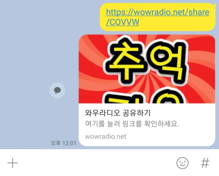

국내 라디오 앱 중에 가장 많은 사용자가 사용 중인 ‘와우 라디오’에서 당신의 방송국, 고유 URL을 생성해 드립니다. 🙂
와우 라디오에 등록된 인터넷 방송은 사용자분들이 직접 방송 등록 요청을 주신 개인 방송국입니다.
와우 라디오에 방송국을 등록하시면 친구랑 같이 듣기 기능을 통해 많은 청취자 분들에게 방송국 URL을 공유하실 수 있습니다.
본인 방송국만의 URL을 지인에게 공유한 예시
공유한 방송국 URL을 클릭하면 해당 방송국으로 이동하여 바로 청취할 수 있습니다.
[탑뮤직] 추억 가요 방송국 바로가기: https://wowradio.net/share/COVVW
(단, 와우 라디오 앱이 설치되어 있지 않으면 와우 라디오 설치 페이지로 이동하며, 앱이 설치되어 있으면 방송국 상세 페이지로 이동하여 방송을 바로 청취할 수 있습니다.)
와우 라디오에 방송 등록을 원하실 경우, wowradio07@gmail.com으로 이메일 주세요.